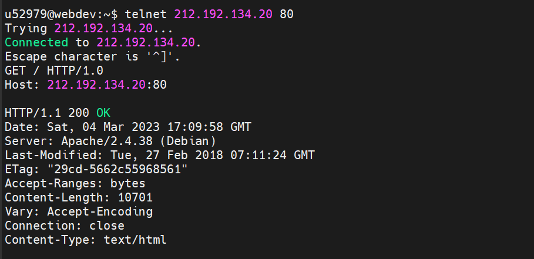
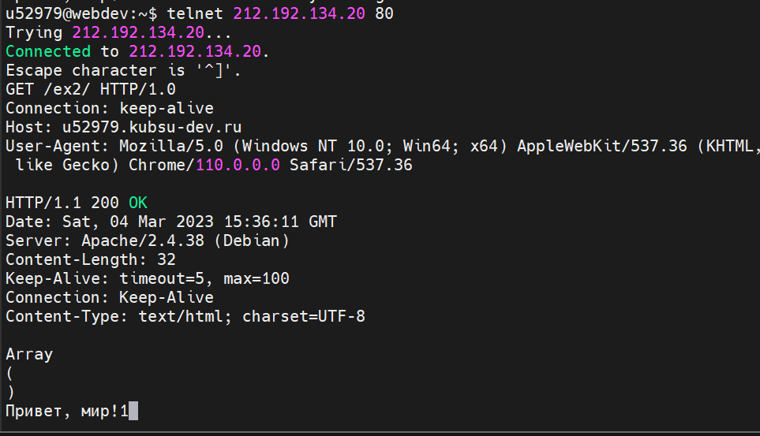
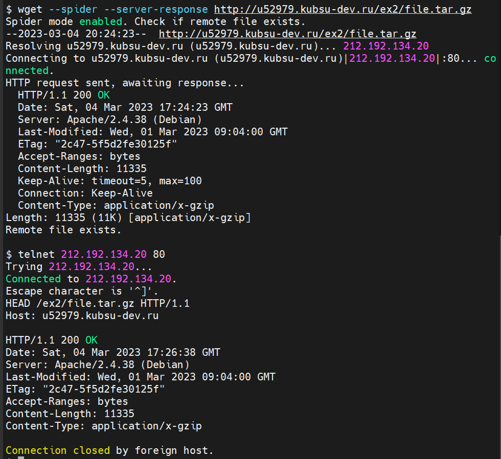
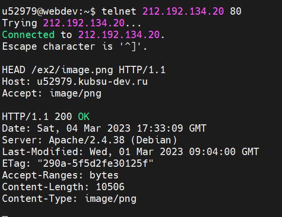
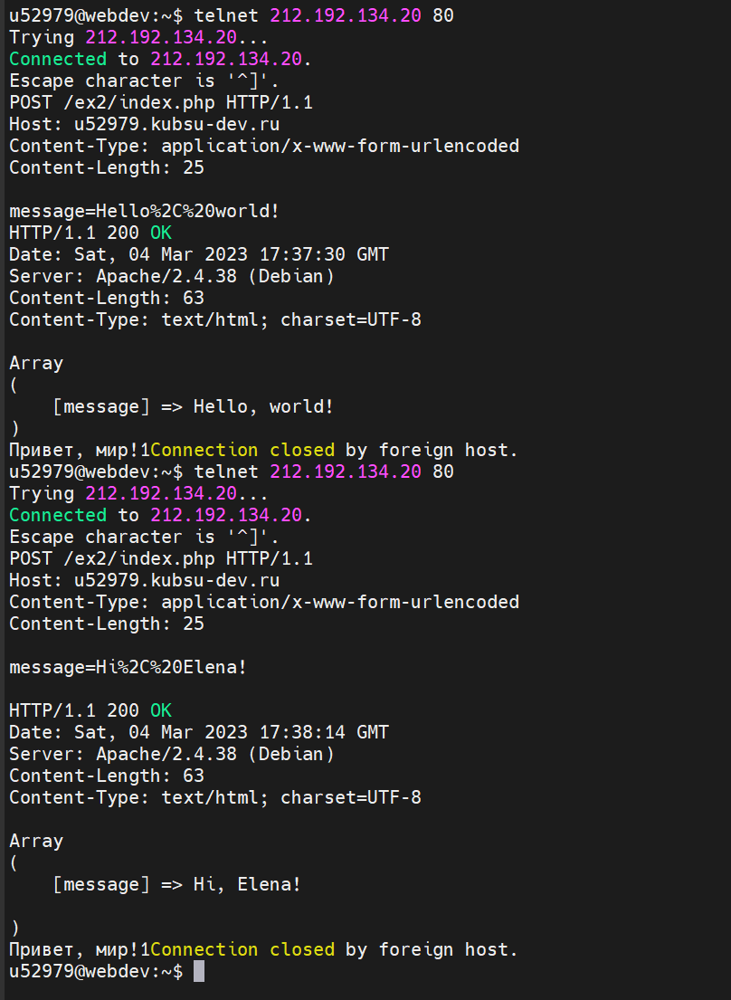
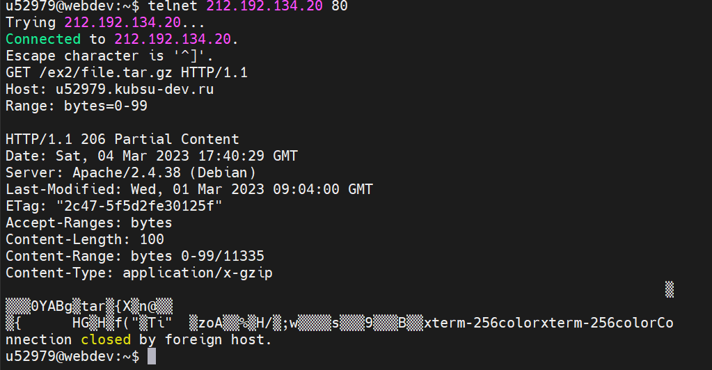
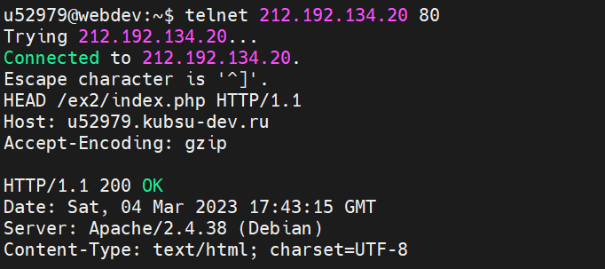

Получаем главную страницу методом GET в протоколе HTTP 1.0
Используется запрос:
GET / HTTP/1.0
Host: 212.192.134.20:80

Получаем внутреннюю страницу методом GET в протоколе HTTP 1.1
Используется запрос:
GET /ex2/ HTTP/1.1
Host: u52925.kubsu-dev.ru

Определем размер файла file.tar.gz, не скачивая его
Используются 2 вида запросов - через wget и стандартный через telnet: (Значение Content-length - размер файла)
wget --spider --server-response http://u52979.kubsu-dev.ru/ex2/file.tar.gz
HEAD /ex2/file.tar.gz HTTP/1.1
Host: u52979.kubsu-dev.ru

Определяем медиатип ресурса /image.png
Используется запрос (Значение Content-Type - ответ на вопрос):
HEAD /ex2/image.png HTTP/1.1
Host: u52979.kubsu-dev.ru
Accept: image/png

Отправляем комментарий на сервер по адресу /index.php
Используется запрос: (message - отправляемый кооментарий, в ответе получаем Array в котором находится отправленный текст)
POST /ex2/index.php HTTP/1.1
Host: u52979.kubsu-dev.ru
Content-Type: application/x-www-form-urlencoded
Content-Length: 25
message=Hi%2C%20World!

Получаем первые 100 байт файла /file.tar.gz
Используется запрос: (В ответ получаем набор символов - первые 100 байт)
GET /ex2/file.tar.gz HTTP/1.1
Host: u52979.kubsu-dev.ru
Range: bytes=0-99

Определем кодировку ресурса /index.php
Используется запрос: (Кодировка определяется посредством тега "Accept-Encoding")
HEAD /ex2/index.php HTTP/1.1
Host: u52979.kubsu-dev.ru
Accept-Encoding: gzip
